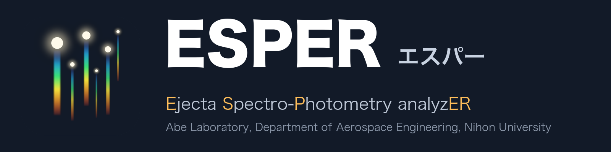
エスパー ESPER 操作マニュアル
ESPER（Ejecta Spectro-Photometry analyzER）v3.2.0 ・ JAXA/ISAS 二段式軽ガス銃の衝突実験で撮影した Phantom v2512 の分光動画（0次光＋1次分光像、48,000 fps）から、イジェクタの並進速度・自転周期・灰色体温度・サイズを求めるソフトの使い方。例は 2407 shot2（A5083 板、SUS304 φ2 mm、約 7 km/s）。
印刷・配布用：PDF 版（A4、21 ページ）
VIDEO動画マニュアル
インストールから画面の操作までを、音声と字幕つきで順に説明しています（6 分 12 秒）。下の各節は、動画と同じ順番です。
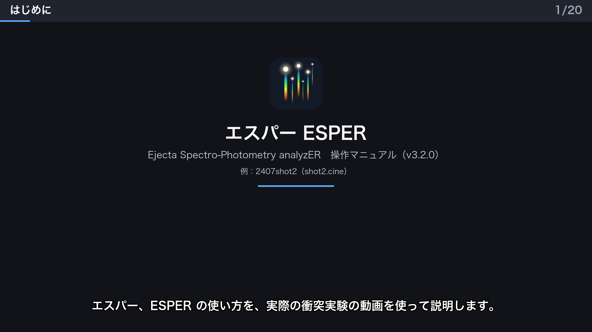
docs/manual/video/esper_manual_720p.mp4、または https://github.com/nu-sx/ESPER で見られます。STARTインストールと起動
アプリ（macOS・Windows）
| OS | ファイル | 入れ方 |
|---|---|---|
| macOS | ESPER-3.2.0-mac-arm64.dmg（Apple シリコン）ESPER-3.2.0-mac-x86_64.dmg（Intel） | dmg を開いて ESPER.app を「アプリケーション」へ。初回は右クリック →「開く」（署名なしのため） |
| Windows | ESPER-3.2.0-windows-setup.exeESPER-3.2.0-windows.zip | インストーラを実行（zip なら展開して ESPER.exe）。「PC が保護されました」が出たら「詳細情報」→「実行」 |
アプリには、実験ログ（JAXA衝突実験Log.xlsx）、全実験の感度曲線（response/）、波長較正・絶対較正と実験カタログ（calib/）、このマニュアルが入っています。実験データ（cine）は入っていません。起動後、設定タブの データフォルダ… で、年月ごとのフォルダ（202510/ など）がある場所を選んでください（例：/xxx/JAXA_impact。次回以降も記憶します）。メニュー「ヘルプ」から、このマニュアルとバージョン情報を開けます。
データフォルダは、アプリと同じ場所に data という名前で置くこともできます。データが別のディスクにあるときは、シンボリックリンクにします（macOS のターミナルで、アプリのある場所で実行）：
ln -s /xxx/JAXA_impact data # /xxx は実験データのある場所環境変数 ESPER_DATA でも指定できます。優先順は ESPER_DATA →「データフォルダ…」で選んだ場所 → アプリの隣の data です。
読める動画は、Phantom の元の cine ファイル（10-bit packed のモノクロ、2203〜2609 のすべて）と、avi・mp4・mov です。カラー（Bayer）の cine は読み込み時にエラーで知らせます。avi・mp4 のフレームレートは再生用の値なので使いません。実撮影のフレームレートを設定タブで入れてください。
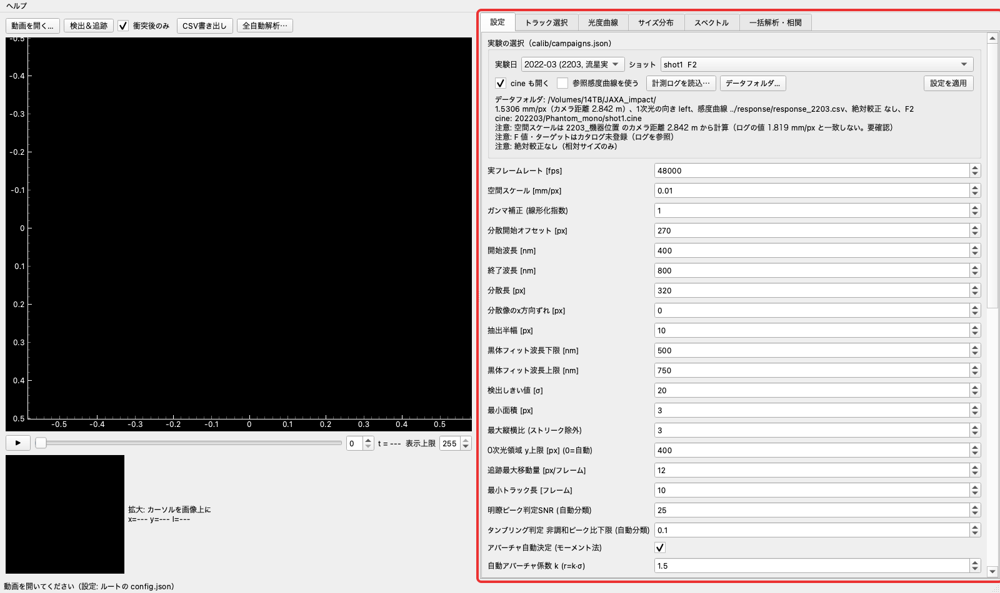
01実験とショットの選択
設定タブのいちばん上の「実験の選択」で、実験日とショットを選び、設定を適用を押します。次の値がすべて自動で入り、「cine も開く」にチェックがあれば元の cine が開きます。
- 空間スケール（カメラ距離から）と、センサー上の 1次光の向き
- 波長較正、感度曲線（装置応答）、絶対較正 K(λ)
- 撮影 F 値（計測ログから）、1次光の x ずれ（全ショット解析での実測値）
- 検出・温度フィット・絶対サイズの解析設定（全ショット解析と同じ）
フレームレートと露光時間は cine のヘッダから読み、衝突の閃光のフレームを自動で見つけます。cine は「データフォルダ」から読みます。見つからないときは選択欄の下に「この cine が見つからない」と出ます。
感度曲線がない、またはおかしい実験では「参照感度曲線を使う」に印を付けます（感度曲線がない実験では自動で使います）。参照感度曲線は 9 回の実験の中央値で、温度フィットの範囲（480–780 nm）でのばらつきは約 5% です。
計測ログ（xlsx）
同梱の計測ログ JAXA衝突実験Log.xlsx は起動時に自動で読み込まれ、ショットごとに日付・プロジェクタイルと速度・ターゲット・真空度・Phantom mono の F 値・フレームレート・露光・コメントが選択欄の下に表示されます。別のログを使うときは 計測ログを読込… を押します。ログの F 値がカタログと違うときは、ログの値を使い、違いを一覧で知らせます。
| 読むシート | 読む内容 |
|---|---|
<年月>_shot記録 | 日付、プロジェクタイル（種類・サイズ・質量・実測速度・エネルギー）、ターゲット、真空度、Phantom（モノクロ分光）の F 値・fps・露光・備考、コメント |
<年月>_計測log | 2311 以前の形式。日付、プロジェクタイル、ターゲット、圧力（mono の F 値は欄の区別がないため読まない） |
<年月>_機材配置 | Phantom Mono の「窓-ターゲット中心」＋「マウント面-窓」＝カメラ距離 |
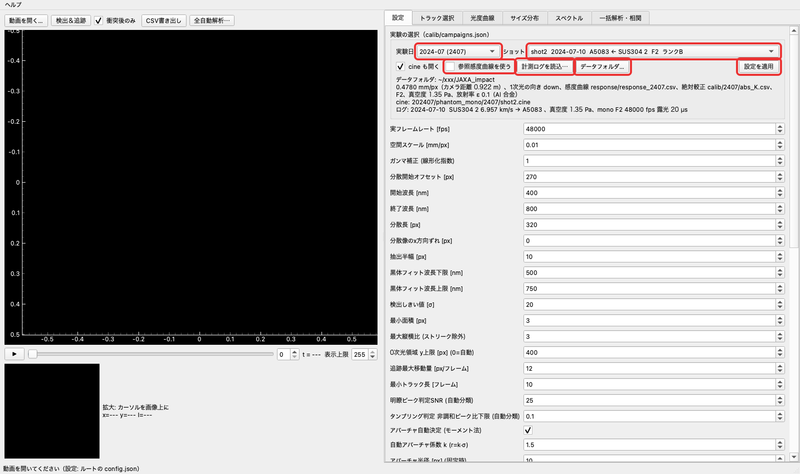
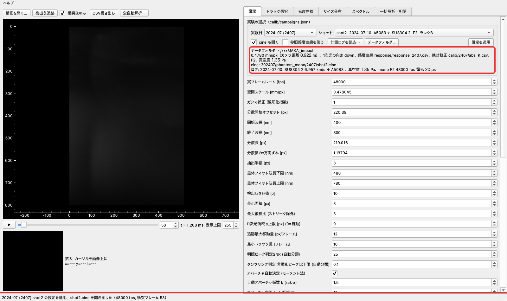
02設定の確認と変更
値は設定タブで確認でき、変えるとすぐに表示と解析に反映されます。カタログにない動画は 動画を開く… で開き、設定を読込…（JSON）と 波長較正JSONを読込… で設定します。
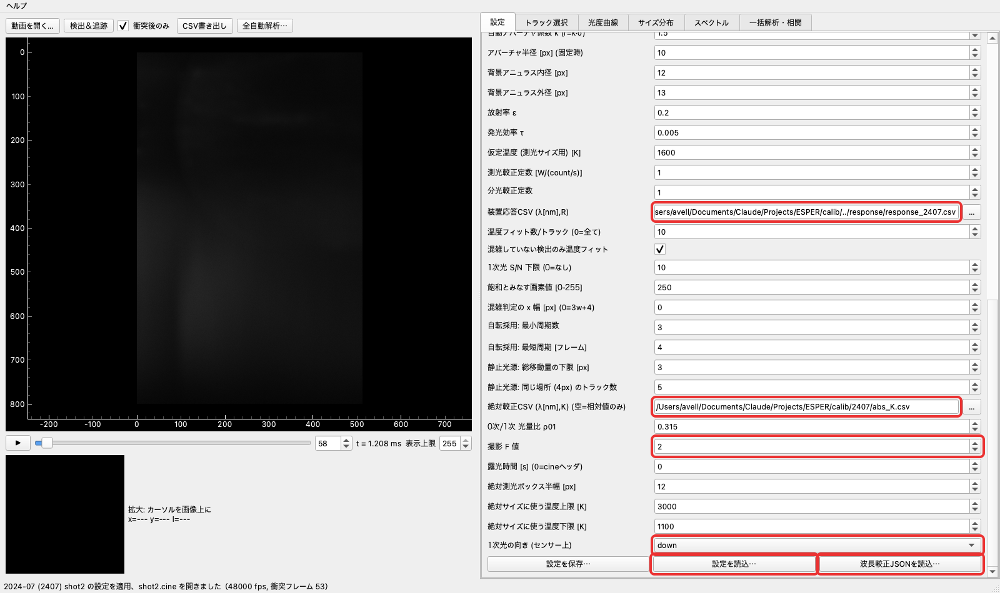
03再生と表示
スライダーや ▶ でフレームを送ります。上の点が 0次光（破片そのもの）、その下に縦に伸びる帯が 1次の分光像です。暗い破片が見えにくいときは、スライダー右の「表示上限」を下げます（解析には影響しません）。
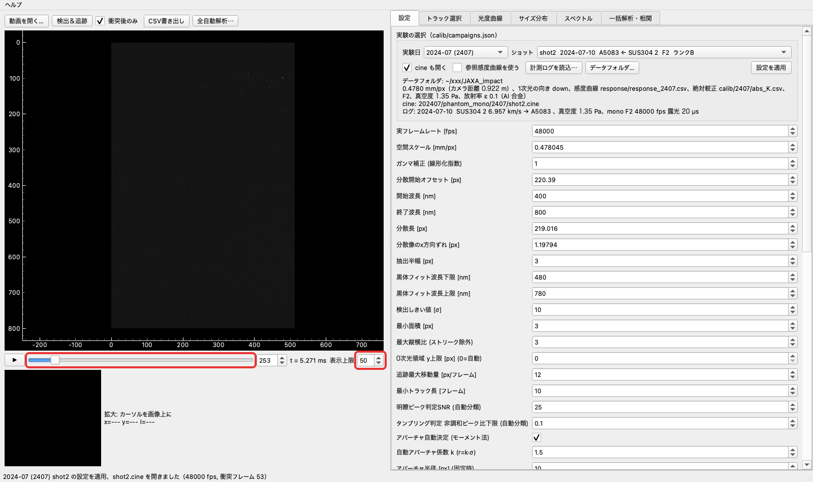
04検出と追跡
検出＆追跡 で、0次光を全フレームで検出し、フレーム間でつないでトラックにします。「衝突後のみ」にチェックがあると、衝突フレームの 5 フレーム後から検出します（全自動解析と同じ）。
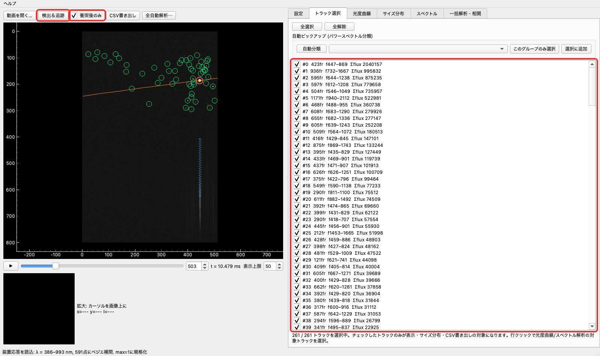
05自動分類
自動分類 で、各トラックの明るさの変動をパワースペクトルで調べ、「明瞭ピーク」「タンブリング」「周期性なし」「データ不足」に分けます。このグループのみ選択 でまとめて選べます。
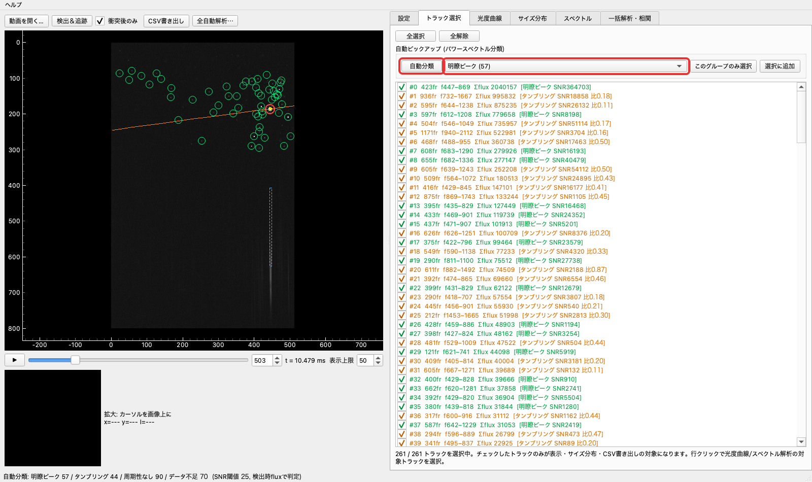
06トラックの選択
一覧の行か、動画上の緑の丸をクリックすると、そのトラックが光度曲線とスペクトルの対象になります。
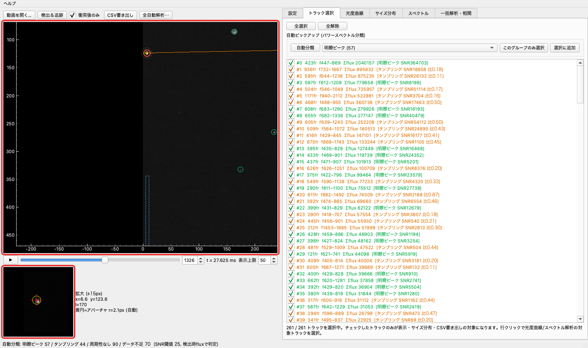
07光度曲線と自転周期
光度曲線タブの 光度曲線を解析 で、開口測光の光度曲線、パワースペクトル、並進速度、自転周期を求めます。自転周期は「1 回転で明るさが 2 回変わる」と仮定し、変動周期の 2 倍としています。
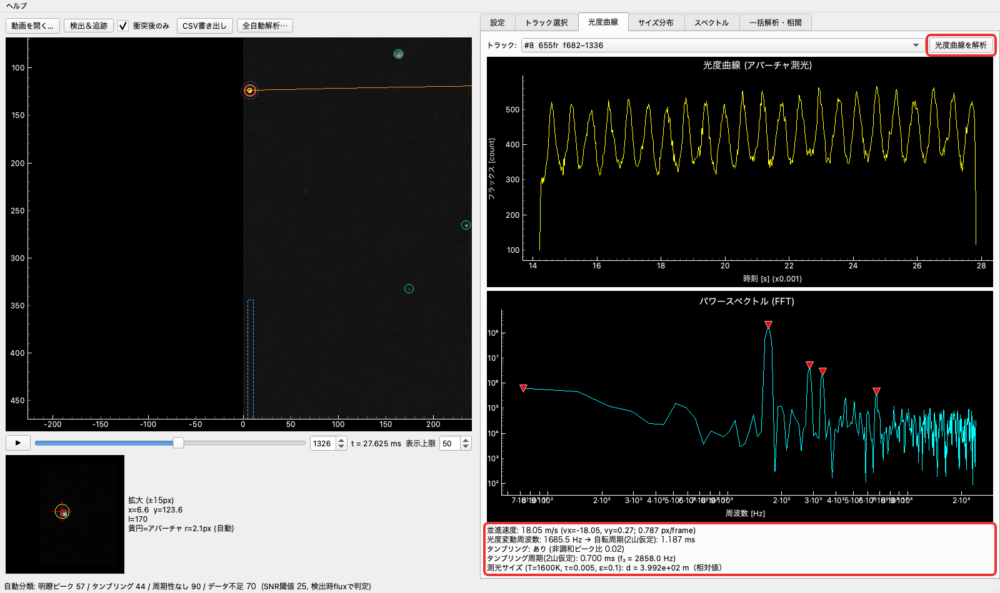
08スペクトル
スペクトルタブには、選択トラックの今のフレームの 1次光スペクトルと灰色体フィットが出ます。灰＝生の値、白＝感度曲線で割った値、緑破線＝感度曲線、赤＝フィット、青破線＝フィット範囲（480–780 nm）。
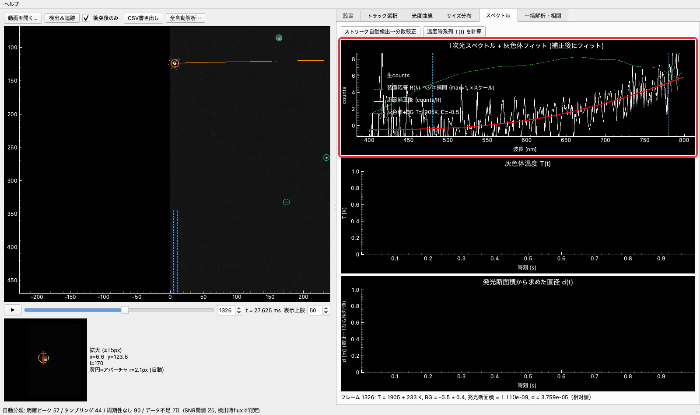
09温度の時間変化
温度時系列 T(t) を計算 で、トラックの全フレームで灰色体をフィットします。一括解析と同じ選別（1次光の帯に他の光源が重なる「混雑」、飽和、1次 S/N）を通ったフレームを赤、外れたフレームを灰で描きます。
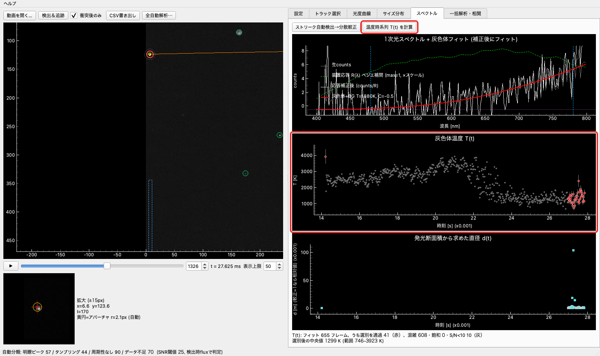
10サイズ分布
サイズ分布タブで、チェックした全トラックの測光サイズから累積分布 N(>d) を作り、べき指数 q をフィットします。フィット範囲は自動で選ばれます。
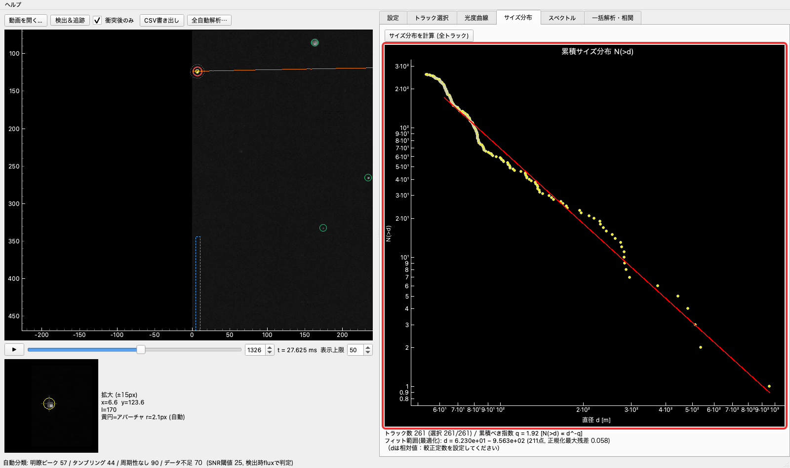
11一括解析
一括解析 (選択トラック) で、選択した全トラックの速度、自転周期、温度、サイズを、動画を 1 回読むだけでまとめて計算します。絶対較正が設定されていれば、サイズは mm 単位の絶対値です。結果を1つのCSVに保存… で 1 トラック 1 行の表に書き出します。
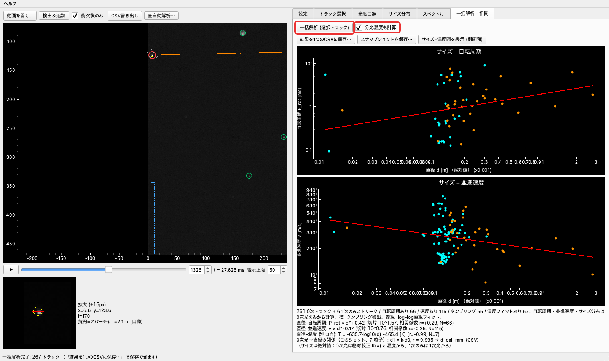
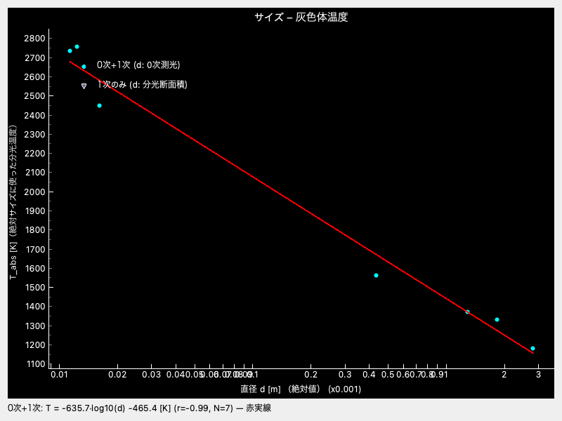
12スナップショット
スナップショットを保存… で、解析した粒子と、温度を求めたときのスペクトルを図に残します。全自動解析では毎回自動で保存されます（<名前>_snap/）。
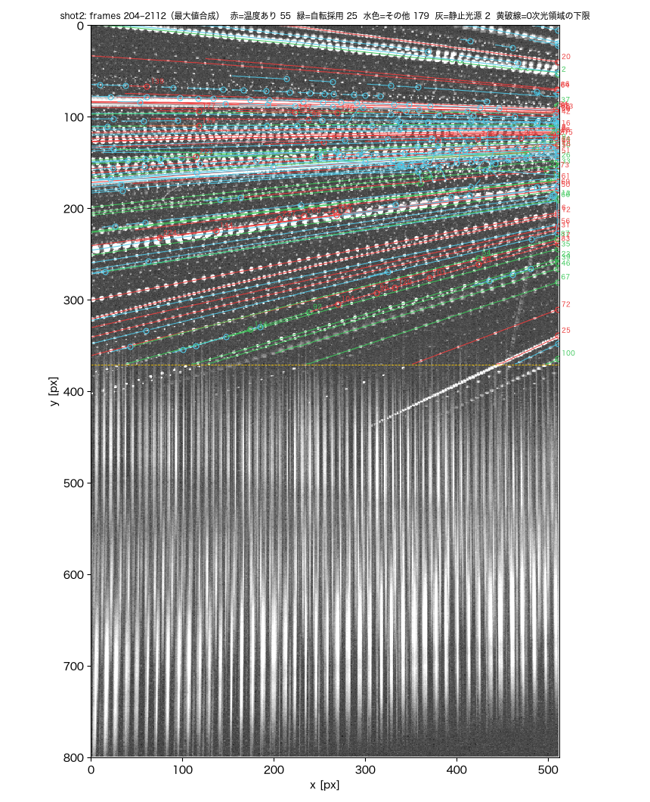
overview.png：解析範囲の最大値合成に、全粒子の軌跡と番号。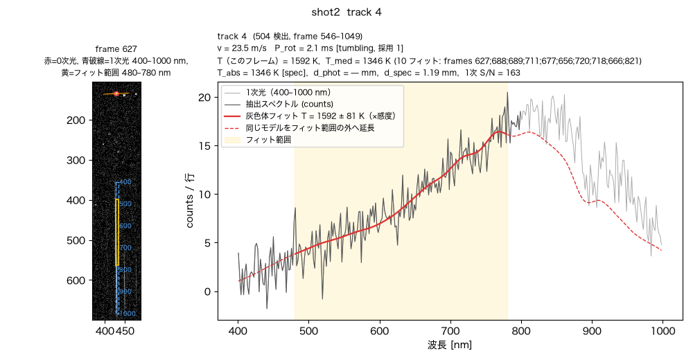
spec_<番号>.png：使ったフレームの 0次光（赤）、1次光 400–1000 nm（青破線）とフィット範囲 480–780 nm（黄）、スペクトル（黒＝取り出した 400–800 nm、灰＝1000 nm まで）と灰色体フィット（赤実線、感度を掛けて生のカウントに戻したもの）。赤破線は同じモデルをフィット範囲の外へ延ばしたもので、800–1000 nm の実測と合えば、波長較正とモデルが近赤外でも合っていることがわかる。13全自動解析と解析動画
全自動解析… は、衝突フレームの検出、検出と追跡、一括解析、0次光の直径の較正、スナップショット、ファイルの書き出しまでを一度に行います（コマンドラインで --headless を付けて実行したときと同じ処理）。選んだショットがトリアージのランク A のときは、解析動画 <名前>_analysis.mp4 も保存します。
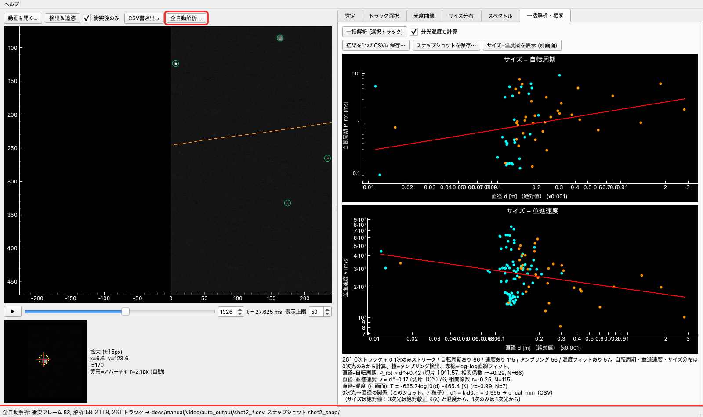
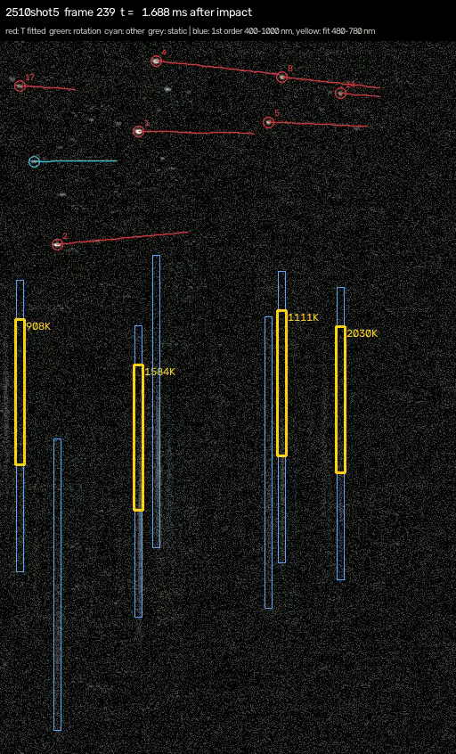
140次光と1次光の直径の関係
1次光の直径 d1（スペクトルと温度から）は、温度フィットが通った粒子にしか出ません。そこでショットごとに、0次光の直径 d0（または 0次光の光量 C0）と d1 の関係を次の 4 通りで当てはめ、相関係数 r（対数で）が最も高いものを採用します。この関係で、すべての粒子の直径 d_cal_mm を 0次光から計算します。
| 関係 | 式 | 説明 |
|---|---|---|
| 比例 | d1 = k·d0 | パラメータ 1 個 |
| べき | d1 = a·d0^b | r は比例と同じ。残差が 10% 以上小さいときだけ採用 |
| 一次式 | d1 = a + b·d0 | |
| 光量のべき | d1 = a·C0^b | 温度を使わない |
粒子が 5 個未満のショットには関係式を作りません（全ショットの集計では、同じターゲット材のショットをまとめた関係を使います）。
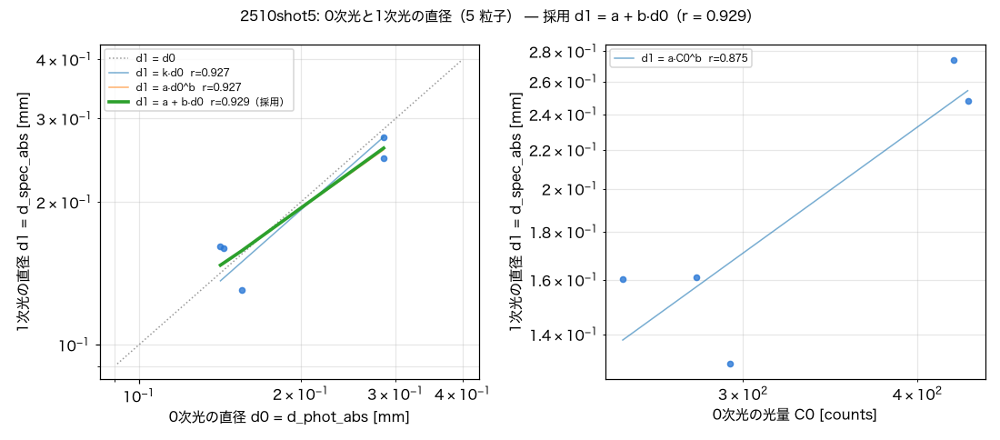
<名前>_size_relation.png（2510 shot5、5 粒子）：左が d0 との関係、右が光量 C0 との関係。太線が採用した式（一次式、r = 0.926）。CLIコマンドラインでの全自動解析
GUI を使わずに、アプリ本体をコマンドラインから実行できます（macOS のアプリ：/Applications/ESPER.app/Contents/MacOS/ESPER、Windows：インストール先の ESPER-cli.exe。以下では ESPER と書きます）。
ESPER --headless --shot 2510shot3 --out OUT # カタログのショット
ESPER --headless --shot 2510shot3 --out OUT --video # 解析動画も
ESPER --headless --shot 2503shot6 --out OUT --ref-response # 参照感度曲線で
ESPER --headless shot.cine --config cfg.json --wavecal wavecal.json --out OUT
ESPER --shot 2510shot3 # GUI をショットを選んだ状態で起動
# --name NAME --max-tracks N --no-snapshotsデータフォルダは環境変数で指定できます（例：macOS ESPER_DATA=/xxx/JAXA_impact ESPER --headless --shot 2510shot3 --out OUT、Windows set ESPER_DATA=X:\xxx\JAXA_impact のあと ESPER-cli.exe --headless …）。
DATA同梱データ（実験ログ・感度曲線・較正）
アプリの中に、次のデータが入っています（macOS では ESPER.app を右クリック →「パッケージの内容を表示」→ Contents/Resources）。
| 場所 | 中身 |
|---|---|
log/JAXA衝突実験Log.xlsx | 実験ログ（日付・条件・真空度・F 値・カメラ距離・コメント） |
response/response_<年月>.csv | 各実験の感度曲線。列 lambda [nm]、R [-]（ハロゲンランプ Lamp_5054 で校正した相対感度、最大 1）。先頭の # 行に由来と単位 |
response/raw/ | ハロゲン記録から作ったすべての曲線（使わなかった記録、形が崩れた 2503・2609 を含む） |
response/reference/ | 参照感度曲線（9 実験の中央値）、ばらつき、各曲線の判定 check.csv（ずれ dev > 0.10 で要確認） |
calib/<年月>/wavecal.json | 波長較正（Hg ランプ）：分散の開始位置・長さ、nm/px、1次光の向き |
calib/<年月>/abs_K.csv | 絶対較正 K(λ)（ランプをターゲット位置に置いた 1次光の応答） |
calib/campaigns.json | 実験カタログ：カメラ距離・空間スケール・向き、ショットごとの日付・ターゲット・F 値・cine の場所 |
| 参照感度曲線を使ったときの温度のずれ | 1,300 K | 1,600 K | 2,000 K | 3,000 K |
|---|---|---|---|---|
| 9 実験での範囲 | −5〜+9% | −6〜+10% | −8〜+11% | −14〜+13% |
2503 と 2609 はハロゲンの記録が使えないため、感度曲線と絶対較正はそれぞれ 2508・2510 のもの。感度曲線のない実験（2210、2603 など）は参照感度曲線を使う。2403 の絶対較正は他の年度の 1/2〜1/3 で参考値。2203・2208・2307（流星実験）は空間スケールが未確認で、絶対較正はありません。
OUT出力ファイル
| ファイル | 中身 |
|---|---|
<名前>_tracks.csv | 1 トラック 1 行（49 列）。速度 v_m_s、自転周期 P_rot_ms と採否 rot_ok、温度 T_med_K・T_abs_K、直径 d_phot_abs_mm・d_spec_abs_mm・d_cal_mm、温度フィットのフレーム spec_frames など |
<名前>_meta.json | 衝突フレーム、解析範囲、fps、露光、トリガー時刻、x ずれ、直径の関係式 |
<名前>_config.json | 使った設定のすべて |
<名前>_sizedist.csv | 累積サイズ分布（静止光源を除く） |
<名前>_size_relation.png | 0次光と1次光の直径の関係 |
<名前>_snap/ | スナップショット（overview.png、spec_<番号>.png、index.csv） |
<名前>_analysis.mp4 | 解析動画（ランク A、または --video） |
NOTE注意点
- 絶対直径は温度にとても敏感です（d ∝ exp(hc/2λkT)。1,450 K と 1,370 K で 1.5 倍）。温度は 1,100–3,000 K の範囲のものだけを使います。
- 1,500 K 前後の破片の 1次光は、大部分が 650–1000 nm にあります（センサーの感度が 1000 nm で落ちるため、ピークは 820–860 nm）。温度フィットは 480–780 nm で行いますが、同じモデルで 800–1000 nm の実測もほぼ再現できることを確かめています。波長の割り当ての誤差は全体で約 −2 nm（実験ごとに −7〜+3 nm）で、温度への影響は数 % 以内です。
- 感度曲線は約 385–996 nm の範囲で、読み込むときに約 10 nm ごとの点でなめらかにします。v3.1.0 まではなめらかにする点が粗く（約 25 nm ごと）、温度が約 1%（15 K 前後）高めに出ていました。v3.1.1 の結果は、温度が約 1% 低く、1次光から求めた絶対直径が約 6% 大きくなります。
- 放射率 ε はターゲットの材料で決めます（v3.2.0）：Al 合金 0.10、玄武岩 0.90。実験カタログにないショットや材料が未登録の実験では、設定タブの値（既定 0.2）を使います。直径は ε−1/2 に比例するので、v3.1 までの ε = 0.2 と比べて、Al 合金の直径は 1.41 倍、玄武岩は 0.47 倍になります。温度・速度・自転は ε によりません。Al の値は液体アルミの測定（632.8 nm で 0.04）と Al の光学定数（480–830 nm で 0.08–0.13）、玄武岩の値は 0.85–1.2 µm の測定（約 0.95）と溶融時の低下から決めました。
- 暗い光源や、1次光の帯に他の光源が重なるフレームでは、温度が 2,500–5,000 K に偏ります。温度は選別を通ったフレームだけで判断してください。
- 自転周期は「1 回転で 2 回明るくなる」仮定です。形によっては変動周期そのものが自転周期のこともあります。
- 0次光の d0 と 1次光の d1 は同じ温度を使うので、相関の一部は温度を共有していることによります。光量の関係（C0）は温度を使いません。
- 解析の実行中は、再生とフレーム送りが止まります（同じファイルを読むため）。